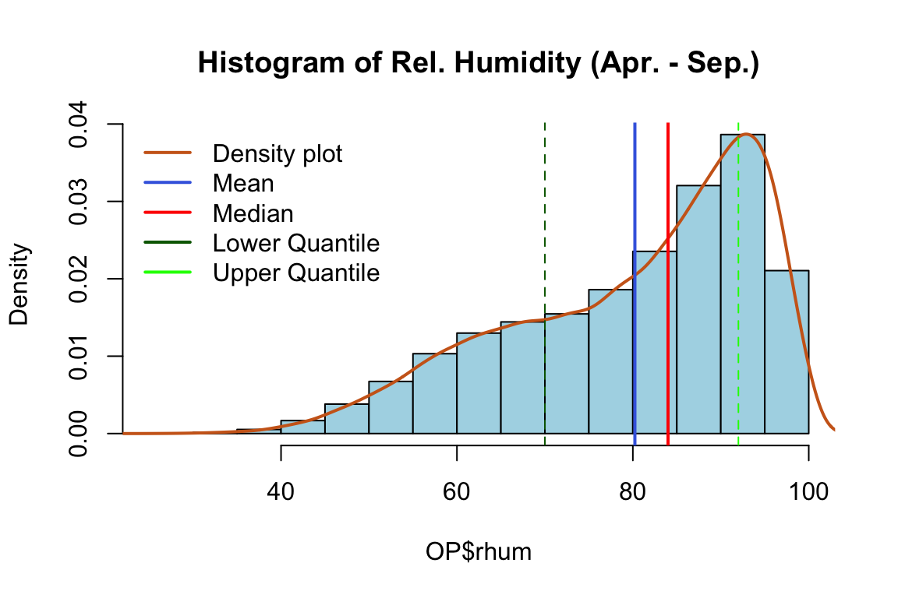
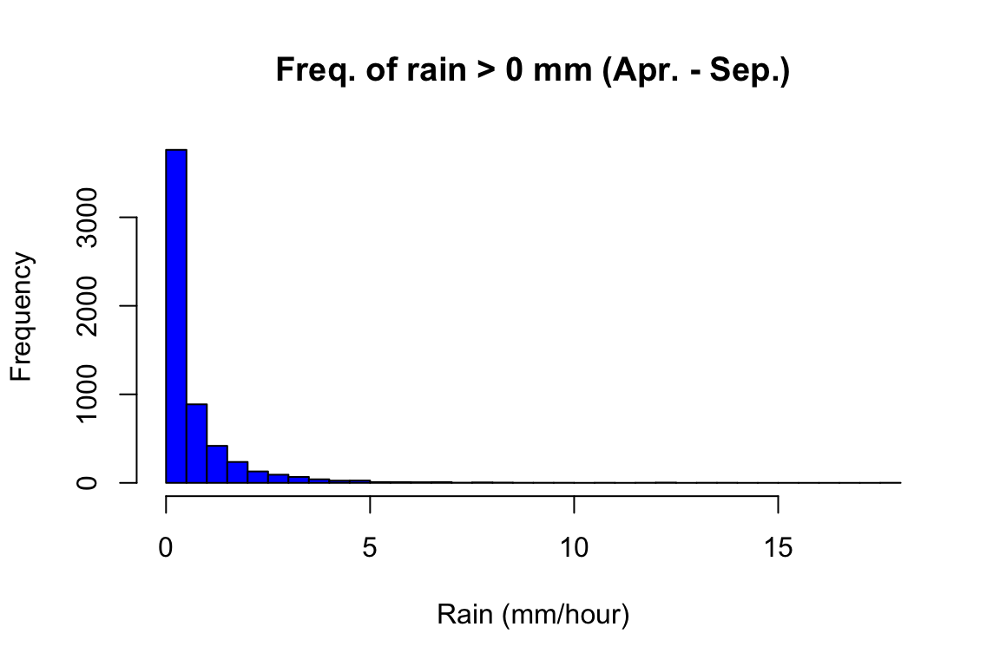
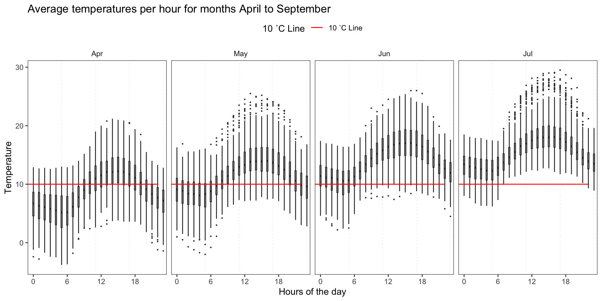
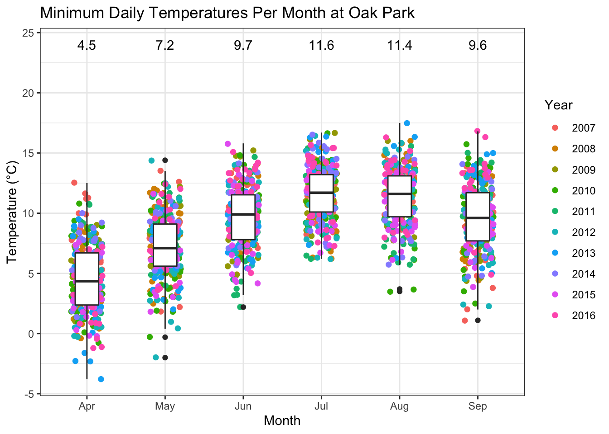
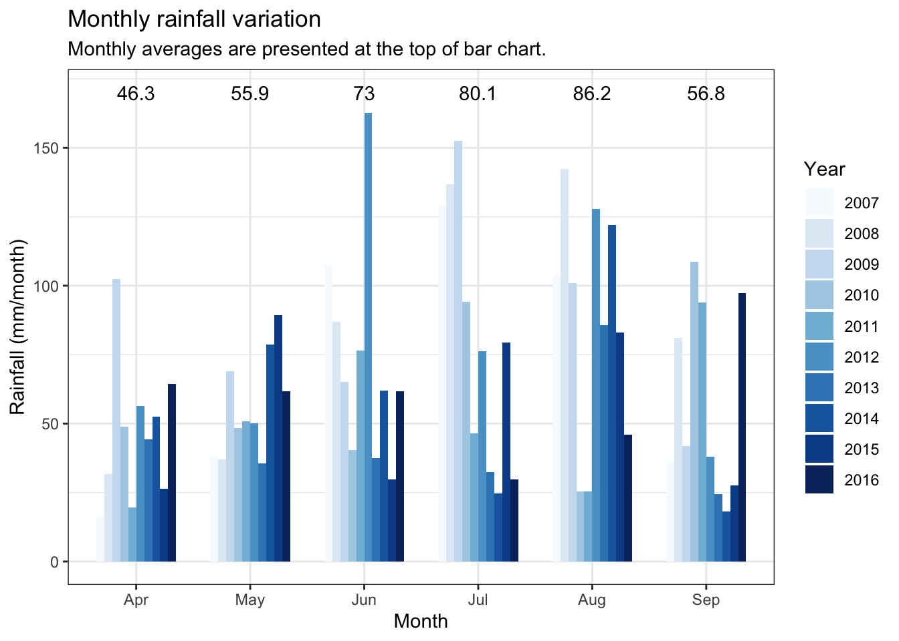
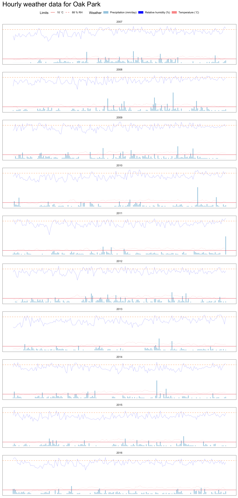

We present the dataset we are working on in this section. An interested reader can get a sense of the location, the weather and the blight related weather conditions and the disease outbreak data.
Packages needed for the data preparation are loaded. If the libraries do not exist locally, they will be downloaded.
list.of.packages <-
c(
"tidyverse",
"readxl",
"data.table",
"knitr",
"zoo",
"imputeTS",
"ggthemes",
"rcompanion",
"mgsub",
"R.utils",
"here",
"stringr",
"pander",
"leaflet",
"ggridges",
"lubridate",
"RColorBrewer",
"egg"
)
new.packages <-
list.of.packages[!(list.of.packages %in% installed.packages()[, "Package"])]
#Download packages that are not already present in the library
if (length(new.packages))
install.packages(new.packages)
if ("gt" %in% installed.packages() == FALSE)
remotes::install_github("rstudio/gt")
list.of.packages <- c(list.of.packages, "gt")
packages_load <-
lapply(list.of.packages, require, character.only = TRUE)
#Print warning if there is a problem with installing/loading some of packages
if (any(as.numeric(packages_load) == 0)) {
warning(paste("Package/s", paste(list.of.packages[packages_load != TRUE]), "not loaded!"))
} else {
print("All packages were successfully loaded.")
}## [1] "All packages were successfully loaded."rm(list.of.packages, new.packages, packages_load)Primary disease outbreak data is acquired from Teagasc breeding program field trial records at Oak Park, Carlow, Ireland.
greenLeafIcon <- makeIcon(
iconUrl = "http://leafletjs.com/examples/custom-icons/leaf-green.png",
iconWidth = 38, iconHeight = 95,
iconAnchorX = 22, iconAnchorY = 94,
shadowUrl = "http://leafletjs.com/examples/custom-icons/leaf-shadow.png",
shadowWidth = 50, shadowHeight = 64,
shadowAnchorX = 4, shadowAnchorY = 62
)
leaflet() %>%
addTiles(group = "OSM (default)") %>%
setView(-8, 53.5, 6) %>%
addMarkers(
lng = -6.9121167,
lat = 52.8560667,
label = "Oak Park",
icon = greenLeafIcon
)Planting date and first observation of the disease are loaded.
#Get subsets of data for period before the epidemics were initiated
dates_cut <-
read_csv(
here::here("data", "op_2007_16", "raw", "plantingdates.csv"),
col_types = cols(
disease_observed = col_date(format = "%d/%m/%Y")
)
)
dates_cut %>%
rename_all(. %>% capitalize() %>%
gsub("_", " ", .))Historical weather data from Met Éireann synoptic weather station at Oak Park was used for model evaluation. The trial sites were in the radius of up to 500 m from the station in all years.
#Weather data, parameters and cut off dates
load(file = here::here("data", "op_2007_16", "raw", "OP_2007-2016.RData"))
rownames(OP) <- NULL
OP[1:5, 1:20] %>%
kable(format = "html") %>%
kableExtra::kable_styling(latex_options = "striped")| date | short_date | year | month | day | i_rain | rain | i_temp | temp | i_wetb | wetb | dewpt | vappr | i_rhum | rhum | msl | i_wdsp | wdsp | i_wddir | wddir |
|---|---|---|---|---|---|---|---|---|---|---|---|---|---|---|---|---|---|---|---|
| 2007-01-01 00:00:00 | 2007-01-01 | 2007 | 1 | 1 | 0 | 0.2 | 0 | 4.8 | 0 | 4.1 | 3.0 | 7.6 | 0 | 87 | 1006.9 | 2 | 11 | 2 | 250 |
| 2007-01-01 01:00:00 | 2007-01-01 | 2007 | 1 | 1 | 0 | 0.0 | 0 | 5.4 | 0 | 4.4 | 3.0 | 7.6 | 0 | 84 | 1007.6 | 2 | 7 | 2 | 240 |
| 2007-01-01 02:00:00 | 2007-01-01 | 2007 | 1 | 1 | 0 | 0.0 | 0 | 5.8 | 0 | 4.7 | 3.2 | 7.7 | 0 | 83 | 1008.4 | 2 | 6 | 2 | 250 |
| 2007-01-01 03:00:00 | 2007-01-01 | 2007 | 1 | 1 | 0 | 0.1 | 0 | 5.2 | 0 | 4.3 | 2.8 | 7.5 | 0 | 84 | 1009.7 | 2 | 15 | 2 | 260 |
| 2007-01-01 04:00:00 | 2007-01-01 | 2007 | 1 | 1 | 0 | 0.0 | 0 | 5.6 | 0 | 4.2 | 2.3 | 7.2 | 0 | 79 | 1010.9 | 2 | 15 | 2 | 260 |
Additional variables needed for the analysis.
colnames(OP)[which(names(OP) == "year")] <- "year_var"
OP <-
add_column(OP, week_var = data.table::week(OP$date), .before = "i_rain")
OP <-
add_column(OP, doy = data.table::yday(OP$date), .before = "i_rain")Subset the data to exclude the months of the year which we do not need for the analysis.
OP <- subset(OP, month > 3 & month < 10)Get a summary of missing values for the variables of interest.
OP %>% group_by(year_var) %>%
summarize(
NA_rain = sum(is.na(rain)),
NA_temp = sum(is.na(temp)),
NA_rhum = sum(is.na(rhum))
) %>%
rename(Year = year_var) %>%
kable(format = "html", title= "Missing values per year") %>%
kableExtra::kable_styling(latex_options = "striped",full_width = FALSE)| Year | NA_rain | NA_temp | NA_rhum |
|---|---|---|---|
| 2007 | 0 | 0 | 0 |
| 2008 | 0 | 0 | 0 |
| 2009 | 6 | 6 | 6 |
| 2010 | 0 | 0 | 0 |
| 2011 | 0 | 0 | 0 |
| 2012 | 0 | 0 | 0 |
| 2013 | 0 | 0 | 0 |
| 2014 | 0 | 0 | 1 |
| 2015 | 0 | 0 | 0 |
| 2016 | 0 | 0 | 0 |
Missing value imputation with cubic spline function works very well up to 8 consecutive values, for variables that have some seasonal frequency, temperature and relative humidity in our case.
infil_gap <- 8 #Maximum length of the infill gap
OP$temp <-
round(na.spline(OP$temp, na.rm = FALSE, maxgap = infil_gap), 1)
OP$rhum <-
round(na.spline(OP$rhum, na.rm = FALSE, maxgap = infil_gap), 0)
OP$rhum <- sapply(OP$rhum, function(x)
ifelse(x > 100, x <- 100, x))
#Check if the imputation worked
OP %>% group_by(year_var) %>%
summarize(
NA_rain = sum(is.na(rain)),
NA_temp = sum(is.na(temp)),
NA_rhum = sum(is.na(rhum))
)%>%
kable(format = "html") %>%
kableExtra::kable_styling(latex_options = "striped",full_width = FALSE)| year_var | NA_rain | NA_temp | NA_rhum |
|---|---|---|---|
| 2007 | 0 | 0 | 0 |
| 2008 | 0 | 0 | 0 |
| 2009 | 6 | 0 | 0 |
| 2010 | 0 | 0 | 0 |
| 2011 | 0 | 0 | 0 |
| 2012 | 0 | 0 | 0 |
| 2013 | 0 | 0 | 0 |
| 2014 | 0 | 0 | 0 |
| 2015 | 0 | 0 | 0 |
| 2016 | 0 | 0 | 0 |
Rain is somewhat harder to impute but there are ways around this problem, especially when there are only a few values missing. Since rain data is required only in certain rare situations for the model to run, defined within the model, we can use the same conditions to impute missing values outside of that range. We are certain that rain is irrelevant if relative humidity is below 88 % and temperature of 8 C, and these values can then be replaced with 0. This way we will know if rain data is missing in areas of interest.
OP[is.na(OP$rain), ]$rain <-
with(OP[is.na(OP$rain), ], ifelse(rhum < 87 | temp < 7, 0, rain))
OP %>% group_by(year_var) %>%
summarize(
NA_rain = sum(is.na(rain)),
NA_temp = sum(is.na(temp)),
NA_rhum = sum(is.na(rhum))
)%>%
kable(format = "html") %>%
kableExtra::kable_styling(latex_options = "striped",full_width = FALSE)| year_var | NA_rain | NA_temp | NA_rhum |
|---|---|---|---|
| 2007 | 0 | 0 | 0 |
| 2008 | 0 | 0 | 0 |
| 2009 | 0 | 0 | 0 |
| 2010 | 0 | 0 | 0 |
| 2011 | 0 | 0 | 0 |
| 2012 | 0 | 0 | 0 |
| 2013 | 0 | 0 | 0 |
| 2014 | 0 | 0 | 0 |
| 2015 | 0 | 0 | 0 |
| 2016 | 0 | 0 | 0 |
There are no missing values and it is safe to proceed with the analysis.
Save the infilled weather data for the analysis for the analysis.
save(OP, file = here::here("data", "op_2007_16", "OP_2007-2016_infilled.RData"))Do some weather data quality controll.
# Check if there are dupicated rows
OP[duplicated(OP), ]# rh has to be within 0 and 100:
OP[which(OP$rh < 0 | OP$rh > 100), ]# Temperature greater than 30 is possibly an outlier:
OP[which(OP$temp > 30), ]Histograms of variables used in the analysis.
hist(OP$temp,
col = "peachpuff",
main = "Histogram of Temperatures (Apr. - Sep.)",
prob = TRUE) # prob = TRUE to show densities instead of frequencies
lines(density(OP$temp), lwd = 2, col = "chocolate3")
abline(v = mean(OP$temp),col = "royalblue", lwd = 2)
abline(v = median(OP$temp),col = "red", lwd = 2)
abline(v=quantile(OP$temp,0.25),col="darkgreen",lty=2)
abline(v=quantile(OP$temp,0.75),col="green",lty=2)
legend(x = "topleft",
bty = "n",
c("Density plot", "Mean", "Median","Lower Quantile", "Upper Quantile"),
col = c("chocolate3", "royalblue", "red", "darkgreen","green"),
lwd = c(2, 2, 2))
hist(OP$rhum,
col = "lightblue",
main = "Histogram of Rel. Humidity (Apr. - Sep.)",
prob = TRUE)
lines(density(OP$rhum), lwd = 2, col = "chocolate3")
abline(v = mean(OP$rhum),col = "royalblue", lwd = 2)
abline(v=quantile(OP$rhum,0.25),col="darkgreen",lty=2)
abline(v=quantile(OP$rhum,0.75),col="green",lty=2)
abline(v = median(OP$rhum),col = "red", lwd = 2)
legend(x = "topleft",
bty = "n",
c("Density plot", "Mean", "Median","Lower Quantile", "Upper Quantile"),
col = c("chocolate3", "royalblue", "red", "darkgreen","green"),
lwd = c(2, 2, 2))
hist(OP$rain[OP$rain>0],
breaks = 40,
col = "blue",
main = "Freq. of rain > 0 mm (Apr. - Sep.)",
xlab = "Rain (mm/hour)") We can see that there is no suspicious values in the data. Rain is an often occurrence at Oak Park, although those are not heavy rains, which makes it a very good ground for the spread of crop pathogens.
We shall summarise the weather data to get an idea about the general and potato late blight related climate conditions at Oak Park.
OP_rain <-
OP %>%
filter(month %in% c(4:10)) %>%
group_by(year_var) %>%
summarize(rain = sum(rain)) %>%
ungroup() %>%
summarize(rain = mean(rain))
OP %>%
filter(month %in% c(4:10)) %>%
summarize(temp = round(mean(temp),1),
rhum = round(mean(rhum),1)
) %>%
bind_cols(., OP_rain) %>%
kable(caption = "10 Year Averages Weather at Oak Park",format = "html") %>%
kableExtra::kable_styling(latex_options = "striped",full_width = FALSE)| temp | rhum | rain |
|---|---|---|
| 13 | 80.2 | 398.31 |
Night-time temperatures remain low April and May.
OP %>%
mutate(hour = hour(date)) %>%
group_by(month) %>%
filter(month %in% c(4:10) & hour %in% c(0:6, 20:23)) %>%
mutate(month_abb = month(month, label = T)) %>%
summarize(temp = round(mean(temp),1),
rhum = round(mean(rhum),1)
) %>%
kable(caption = "Night-time Averages 8PM:6AM",format = "html")%>%
kableExtra::kable_styling(latex_options = "striped",full_width = FALSE)| month | temp | rhum |
|---|---|---|
| 4 | 6.6 | 86.7 |
| 5 | 9.2 | 86.5 |
| 6 | 11.7 | 88.7 |
| 7 | 13.4 | 89.6 |
| 8 | 13.1 | 89.8 |
| 9 | 11.5 | 90.6 |
#Calculate average minimum daily temeperatures per month
OP_rain <-
OP %>%
filter(month %in% c(4:10)) %>%
group_by(year_var, month) %>%
summarize(rain = sum(rain)) %>%
mutate( month_abb = month(month, label = T)) %>%
group_by(month) %>%
summarize(rain = round(mean(rain), 1))
#Calculate average minimum daily temeperatures per month
OP_min_temp <-
OP %>%
filter(month %in% c(4:10)) %>%
group_by(year_var, month, short_date) %>%
summarize(min_temp = round(min(temp),1)) %>%
mutate( month_abb = month(month, label = T)) %>%
group_by(month) %>%
summarize(min_temp = round(mean(min_temp), 1)) %>%
left_join(., OP_rain, "month")
OP_months <-
OP %>%
filter(month %in% c(4:10)) %>%
group_by( month) %>%
summarize(temp = round(mean(temp),1),
rhum = round(mean(rhum),1)
) %>%
left_join(., OP_min_temp, "month")
OP_months%>%
kable(caption = "Monthly Averages",format = "html")%>%
kableExtra::kable_styling(latex_options = "striped",full_width = FALSE)| month | temp | rhum | min_temp | rain |
|---|---|---|---|---|
| 4 | 8.8 | 78.0 | 4.5 | 46.3 |
| 5 | 11.3 | 78.0 | 7.2 | 55.9 |
| 6 | 13.9 | 79.8 | 9.7 | 73.0 |
| 7 | 15.4 | 80.9 | 11.6 | 80.1 |
| 8 | 15.0 | 81.3 | 11.4 | 86.2 |
| 9 | 13.3 | 83.3 | 9.6 | 56.8 |
Night temperatures are low are low in Months of April and May, and only start to kick off in June.
Lets take a closer look into variations in different seasons.
OP %>%
mutate(hour = hour(date)) %>%
filter(month %in% c(4:7)) %>%
group_by(year_var, month, hour) %>%
mutate(month_abb = month(month, label = T)) %>%
ggplot(aes(factor(hour), temp)) +
geom_vline(
xintercept = seq(0, 24, 6),
size = 0.1,
color = "gray",
linetype = "dotted"
) +
geom_boxplot(width = 0.2, outlier.size = 0.2) +
geom_line(aes(hour, 10, color = "10 ˚C Line")) +
scale_fill_manual(values = c("10 ˚C Line" = "red"),
aesthetics = c("colour", "fill")) +
facet_grid(~ month_abb) +
theme_article() +
theme(legend.position = "top") +
scale_x_discrete(labels = seq(0, 24, 6), breaks = seq(0, 24, 6)) +
labs(
title = "Average temperatures per hour for months April to September",
y = "Temperature",
x = "Hours of the day",
color = "10 ˚C Line"
)
OP$month_abb <- month(OP$month, label = T)
ggplot( OP, aes(x = temp, y = factor(month_abb, ordered = T)))+
geom_density_ridges_gradient(
aes(fill = ..x..), scale = 2, size = 0.2
) +
scale_fill_gradientn(
colours = c("#0D0887FF", "#CC4678FF", "#F0F921FF"),
name = "Temp. (°C)"
)+
ggtitle( "Temperatures at Oak Park")+
xlab("Temperature (°C)")+
ylab("Month")+
theme_ridges(font_size = 13, grid = TRUE)## Picking joint bandwidth of 0.512#Average temperatures plot
OP_temp <-
OP %>%
filter(month %in% c(4:10)) %>%
group_by(year_var, month, short_date) %>%
summarize(temp = round(mean(temp),1)) %>%
mutate( month_abb = month(month, label = T))
ggplot(OP_temp,aes(month_abb,temp))+
geom_jitter(aes(colour = factor(year_var)), width = 0.2, size = 1.7)+
geom_boxplot( width = 0.3)+
annotate("text",x = 1:6, y = 24,
label=as.character(round(OP_months$temp,2)) )+
ggtitle("Average Daily Temperatures Per Month at Oak Park")+
ylab("Temperature (°C)")+
xlab("Month")+
labs(color = "Year")+
theme_bw()
Minimum temperatures are interesting because they are a limiting factor for primary cycles of P. infestans early in the season.
OP %>%
filter(month %in% c(4:10)) %>%
group_by(year_var, month, short_date) %>%
summarize(min_temp = round(min(temp),1)) %>%
mutate( month_abb = month(month, label = T)) %>%
ggplot(aes(month_abb,min_temp))+
geom_jitter(aes(colour = factor(year_var)), width = 0.2, size = 1.7)+
geom_boxplot( width = 0.3)+
annotate("text",x = 1:6, y = 24,
label=as.character(round(OP_months$min_temp,2)) )+
ggtitle("Minimum Daily Temperatures Per Month at Oak Park")+
ylab("Temperature (°C)")+
xlab("Month")+
labs(color = "Year")+
theme_bw()ggplot( OP, aes(x = rhum, y = factor(month_abb, ordered = T)))+
geom_density_ridges_gradient(
aes(fill = ..x..), scale = 2, size = 0.2
) +
scale_fill_gradientn(
colours = c("#0D0887FF", "#CC4678FF", "#F0F921FF"),
name = "RH (%)"
)+
scale_x_continuous(expand = c(0.1, 0)) +
ggtitle( "Relative Humidity at Oak Park")+
xlab("Relative Humidity (%)")+
ylab("Month")+
theme_ridges(font_size = 13, grid = TRUE)## Picking joint bandwidth of 2.11OP %>%
filter(month %in% c(4:10)) %>%
group_by(year_var, month) %>%
summarize(rain = sum(rain)
) %>%
mutate( month_abb = month(month, label = T)) %>%
ggplot(aes(month_abb,rain,fill = factor(year_var)))+
geom_bar( position="dodge", stat="identity", width = 0.7)+
scale_fill_manual(values = colorRampPalette(brewer.pal(10, "Blues"))(10))+
annotate("text",x = 1:6, y = 170,
label=as.character(OP_months$rain))+
ggtitle( "Monthly rainfall variation")+
xlab("Month")+
ylab("Rainfall (mm/month)")+
labs(fill = "Year",
subtitle = "Monthly averages are presented at the top of bar chart. ")+
theme_bw()
Let us take a look into sums of hours with blight favorable conditions.
OP %>%
mutate(hour = hour(date)) %>%
mutate(humid = ifelse(rhum >= 90 & temp>= 10, 1,0)) %>%
mutate(cond_night = ifelse(rhum >= 90 & temp>= 10 & hour %in% c(20:24,0:6), 1,0)) %>%
filter(month %in% c(4:8)) %>%
group_by(year_var,month) %>%
summarise(cond = sum(humid),
cond_night = sum(cond_night)) %>%
mutate( month_abb = month(month, label = T)) %>%
select(-c(month)) %>%
reshape2::melt(id.vars = c("year_var", "month_abb"),
variable.name = "period_of_day",
value.name = "humid") %>%
group_by(month_abb,period_of_day ) %>%
summarise(humid = mean(humid),
sd = sd(humid)) %>%
ggplot(aes(month_abb, humid, fill = period_of_day, group)) +
geom_bar(stat = "identity",
color = "black",
position = position_dodge()) +
geom_errorbar(aes(ymin = humid - sd,
ymax = humid + sd), width = 0.2) +
scale_fill_manual(
name = "Period of the day:",
labels = c("Whole day" , "During night (8PM:6AM)"),
values = c("#0D0887FF", "#CC4678FF")
) +
labs(
title = "Blight favorable weather averages.",
subtitle = "Average monthly sum of hours with T >= 10 °C and RH >= 90 %.",
y = "Humid weather (hours)",
x = "Month"
) +
theme_article()+
theme(legend.position = c(0.15, 0.85),)The number of wet hours that are within potato late blight biological range is rising from april to July. Mid- July is when the blight epidemics usually kick off.
Finally, the full daily weather data is presented below.
The code
OP %>%
filter(month %in% c(4:10)) %>%
group_by(year_var, month, short_date) %>%
summarize(temp = round(mean(temp),1),
rain = sum(rain),
wdsp = mean(wdsp),
rhum = round(mean(rhum),1)
) %>% rename(date = short_date) %>%
ggplot() +
geom_line(
aes(
x = date,
y = rhum,
color = "Relative humidity (%)",
fill = "Relative humidity (%)"
),
size = 0.1
) +
geom_line(aes(
x = date,
y = temp,
colour = "Temperature (˚C)",
fill = "Temperature (˚C)",
),
size = 0.1) +
geom_col(
aes(date,
rain,
colour = "Precipitation (mm/day)",
fill = "Precipitation (mm/day)"),
size = 1 ,
inherit.aes = TRUE,
width = 0.05
) +
geom_hline(aes(yintercept = 88,
linetype = "88 % RH"),
colour = "#ff7f00",
size = 0.3) +
geom_hline(aes(yintercept = 10,
linetype = "10 ˚C"),
colour = "#e31a1c",
size = 0.3) +
labs(x = "", y = "T (˚C), PR (mm), RH (%) and Wind (m/s)") +
scale_colour_manual(
"Weather",
values = c(
"Relative humidity (%)" = "blue",
"Temperature (˚C)" = "#fb9a99",
"Precipitation (mm/day)" = "#a6cee3"
)
) +
scale_fill_manual(
"Weather",
values = c(
"Relative humidity (%)" = "blue",
"Temperature (˚C)" = "#fb9a99",
"Precipitation (mm/day)" = "#a6cee3"
)
) +
scale_linetype_manual(name = "Limits",
values = c(1, 2, 3)) +
theme_article() +
theme(
plot.title = element_text(size = 22),
axis.title.x = element_blank(),
axis.text.x = element_blank(),
axis.ticks.x = element_blank(),
axis.title.y = element_blank(),
axis.text.y = element_blank(),
axis.ticks.y = element_blank(),
legend.position = "top"
) +
facet_wrap(. ~ year_var, scales = "free_x", ncol = 1) +
ggtitle("Hourly weather data for Oak Park")